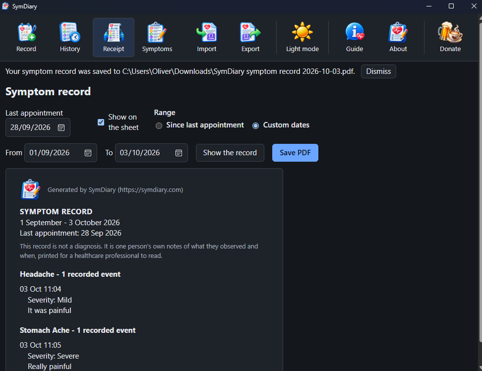

What SymDiary does
Everything you write stays in one list; the sheet you save from it carries your own words and nothing else. Each part is below, beside a picture of the screen it happens on.
Everything you have written, in one list
Narrow it to a stretch of dates, to one symptom or to one severity when you want to look something up. Correct an entry that came out wrong; remove one you did not mean to keep.
- It asks before it deletes and names exactly what will go.
- Nothing is hidden from you. The list is the record; there is no other copy of it anywhere.

What your doctor actually sees
Your own words, grouped by symptom, with the time each one happened. Nothing else of its own.

- No scores and no charts. Counting your entries is the only arithmetic it does.
- No opinion. It never suggests what any of it might mean; it never says one thing led to another.
- Your wording, untouched. "I took a couple of paracetamol" goes on the sheet as you typed it, not translated into medical language.
- It says what it is. Above the first entry the sheet states that this is not a diagnosis; it is one person's own notes, printed for a healthcare professional to read.
- Since your last appointment. Mark the day you last saw someone and the sheet starts there next time. When the dates take in that day, the sheet says when it was, so whoever reads it can see what is new; untick a box to leave it off.
It keeps your words, not its own
The first time you write "Tiredness" it remembers the word and offers it back the next time, so the same thing is not filed under four spellings by December. If you would rather call it something else, rename it and every entry follows.